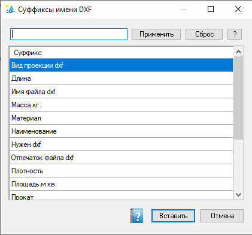

Суффиксы имени DXF
Выбор готового суффикса для шаблона имени файла DXF. Список хранится в настройках Velum (Settings.xml) и используется из пакетной диагностики и одиночного экспорта. При открытии с деталью новые имена свойств модели могут добавляться в список (старые не удаляются).
Как открыть
Кнопка Суффиксы… в окне пакетной диагностики DXF или в диалоге экспорта DXF.

Сверху — фильтр списка (Применить / Сброс / ?); в середине — столбец «Суффикс»; внизу — Вставить и Отмена.
Элементы окна
| Элемент | Назначение |
|---|---|
| Поле фильтра + Применить / Сброс / ? | Отбор строк по имени суффикса (маски — как в других формах). Enter в поле фильтра тоже применяет маску. «Сброс» очищает фильтр и показывает полный список. «?» — справка по маскам. |
| Список (столбец Суффикс) | Имена фрагментов для шаблона файла: свойства детали/конфигурации и служебные поля учёта DXF (материал, толщина, вид проекции, отпечаток файла и т.п.). Выделите одну строку. |
| Вставить | Передать выбранный суффикс в шаблон имени родительского диалога и закрыть окно. Preview «Итоговое имя файла» в родителе обновится. |
| Отмена | Закрыть без вставки. |
| Кнопка справки (иконка) | Этот раздел справки. |
Что бывает в списке
Набор зависит от Settings и свойств деталей. Часто встречаются, например:
- Материал, Толщина, Длина, Масса, Прокат, Плотность, Площадь — свойства модели;
- Вид проекции dxf, Имя файла dxf, Отпечаток файла dxf, Нужен dxf — поля учёта выгрузки;
- Наименование и другие пользовательские свойства.
Токены количества (
[Quantity] / [Кол-во]) в этот список не попадают: суффикс « - N шт» на пакетной форме задаётся флажком «Добавить кол-во по сборке» и полем «Кол-во изделия» (N = кол-во в сборке × кол-во изделия).
Порядок работы
- При необходимости отфильтруйте список.
- Выделите нужный суффикс.
- Нажмите Вставить.